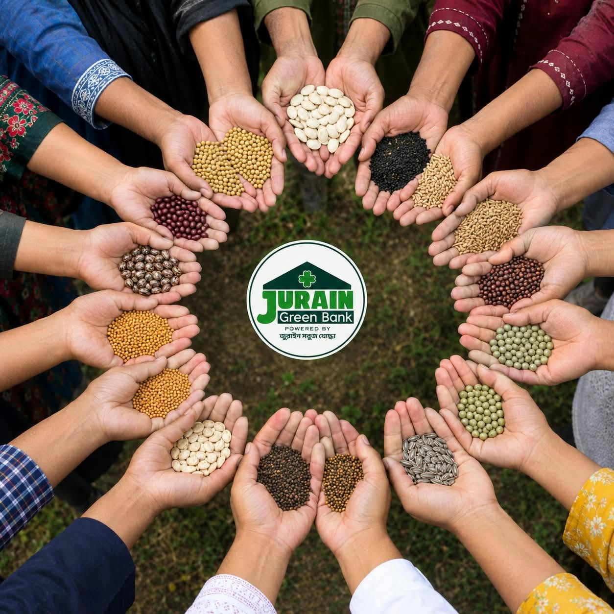

পূর্ব জুরাইন, ঢাকা · তৃণমূল পরিবেশ আন্দোলন
টেকসই কৃষি, নিরাপদ খাদ্য, সবুজ সমৃদ্ধি
জুরাইন সবুজ যোদ্ধার উদ্যোগে আমরা রাসায়নিকমুক্ত কৃষি, নগর সবুজায়ন ও জীবন্ত মাটির পক্ষে কাজ করি—ইউরিয়া ও বিষাক্ত কীটনাশকের বদলে জৈব কম্পোস্ট ও বায়োচার ছড়িয়ে দিচ্ছি।
926+
কমিউনিটি অনুসারী
12,000+
চারা প্রস্তুত ও বিতরণ
450+
ছাদবাগান ও নগর প্রকল্প
85+
সন্ধ্যার চারা রোপণ ক্যাম্প

নগর চারা ও কাটিং রোপণ
সবুজ সঞ্চয়ে, সমৃদ্ধ ভবিষ্যৎ
সংরক্ষিত প্রতিটি বীজ ও রাসায়নিকমুক্ত প্রতিটি চারা ঢাকার মাটি, বাতাস ও নিরাপদ খাদ্য ফিরিয়ে আনে।